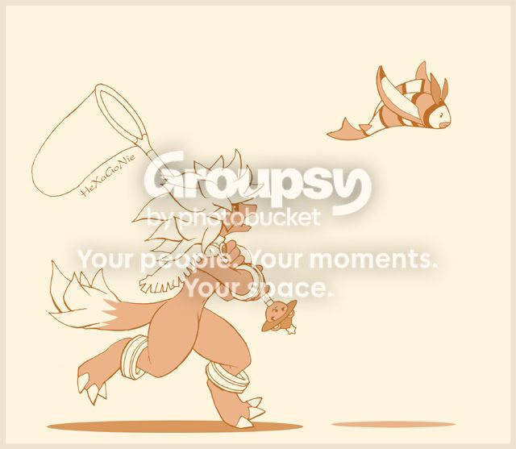
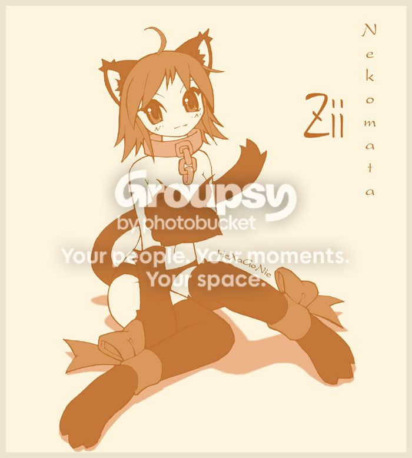

http://eco.froztic.in.th/archive/ecofanclub/
H - Mastery [9]
http://eco.froztic.in.th/archive/ecofanclub/viewtopic.php?f=21&t=35682
หน้า 1 จากทั้งหมด 3

น่ารักอ่ะ
/me สั่น...~~~
อ๊า ~~ !! น่าร้ากกกก -- ก !! หนอนน่าร้ากก- กก !! คนก็น่าร้ากกกก - ก !!
อ๊า ~~ !! น่าร้ากกกก -- ก !! หนอนน่าร้ากก- กก !! คนก็น่าร้ากกกก - ก !!
น่าร้ากกกกกก!! น่ารักได้ใจจริงๆว่าแต่ใช้สมองส่วนในคิดหรอ - - เฮ้ย!!ไม่ได้ว่าจะบอกว่าส่วนไหนจะได้ใช้บ้างจะได้น่ารักเหมือนกาน
น่ารักจังเลยอะงิ ^^

*0* น่ารักอีกแล้ว ถามอีกทีใช้สมองส่วนไหนคิด จากได้ใช้ส่วนนั้นคิดมั้ง ^^
รูปน่ารักมากเลยค่ะ ท่าทางจะชอบแนวแมคคานิกนะเนี่ย *w*
กี๊ดซ์ น่ารักอีกแย้วววว เพนกวินทางใต้คงจะร้อนมากสินะ > < ถึงขนาดไอติม1k ยังซื้อ
Re: H - Mastery [2]
นั่นสินะ จะวิ่งไปยิงทันมะนี่...
เอาเปนว่า ตั้งป้อมยิงเลยก็ละกัน ไม่ต้องขยับไปไหน :D
ถามว่าใช้สมองส่วนไหนเหรอ...
ออลเฟกทอรีบัลบ์ ซีรีบรัม ทาลามัส ไฮโพทาลามัส พอนส์ เมดัลลา ซีรีเบลลัม ....ใช้หมดเลย (มั้ง)
บางที ก็คิดว่าไม่จำเป็นต้องคำนึงถึงหรอกว่ามันจะคิดออกมาจากส่วนไหน บทมันจะออก มันก็ออกได้ทุกที่นั่นแหละ
ว่าแต่ ตอนนี้.....
มาดูวิธีจับปลาในเกมอิโค่ว กันเถอะ
ลืมคันเบ็ดและก็เหยื่อไปได้เลย ฮูเร่~~
เอาเปนว่า ตั้งป้อมยิงเลยก็ละกัน ไม่ต้องขยับไปไหน :D
ถามว่าใช้สมองส่วนไหนเหรอ...
ออลเฟกทอรีบัลบ์ ซีรีบรัม ทาลามัส ไฮโพทาลามัส พอนส์ เมดัลลา ซีรีเบลลัม ....ใช้หมดเลย (มั้ง)
บางที ก็คิดว่าไม่จำเป็นต้องคำนึงถึงหรอกว่ามันจะคิดออกมาจากส่วนไหน บทมันจะออก มันก็ออกได้ทุกที่นั่นแหละ
ว่าแต่ ตอนนี้.....
มาดูวิธีจับปลาในเกมอิโค่ว กันเถอะ


ลืมคันเบ็ดและก็เหยื่อไปได้เลย ฮูเร่~~
วาดสวยอีกละค่า แง่มๆ ชอบลายเส้นจัง >w<
ดูทั้ง3ภาพแล้ว...
คุณHeXaGoNiE ต้องสิงสถิตอยู่ที่ แถวๆ เมืองIron แน่เรย
คุณHeXaGoNiE ต้องสิงสถิตอยู่ที่ แถวๆ เมืองIron แน่เรย
ไม่ได้ไปเมือง ไอรอน มานานแค่ไหนแล้วก็ไม่รู้
ปกติตอนนี้ก็ป้วนเปี้ยนอยู่รอบ ๆ อโคร กะอัพทาวน่ะ
ไม่รู้ไปไหนดี ....ทำเควส ละก็แต่งตัว
= w =
หา pet ใหม่ ๆ มาเลี้ยงมั่งดีกว่า (มั้ย)
อะ นี่ เนโกะมา~~~...ตะ แบบคิดเอาเอง
ชื่อ Zii
สถานะของ pet
All stat 7 +777
คุณสมบัติเมื่อติดตั้ง
Payl -70
Capa -70
สกิลส่วนตัว (สุ่มการใช้งาน)
kiss __ฟื้น HP MP SP 100%
cheer __all stat +20 ระยะเวลา 7 วินาที
hug __แก้สถานะผิดปกติทั้งหมด + บัพต้านทานสภาวะผิดปกติทุกประเภท
Onii sama! __ชุบชีวิตเจ้าของพร้อม HP MP SP เต็ม และคืน % ที่เสียไปทั้งหมด
สกิลสำหรับเจ้าของ เมื่อติดตั้ง pet (ทั้งหมดเป็น passive)
high temperature __อุณหภูมิร่างกายสูงขึ้น HP ไม่ลดเมื่ออยู่ในพื้นที่พิเศษ
leave my pet alone! __เมื่อ pet ถูกโจมตี เจ้าของจะติดสถานะ Berserker โดยอัตโนมัติ
Heart of Puchi Pururu __เมื่อ pet ตาย stat ทั้งหมดของเจ้าของจะเท่ากับ Puchi Pururu เป็นเวลา 30 นาที
H Mastery __ยังไม่วินิจฉัย...
แง่ว ..มันจะเวิร์คมะนี่ :p
ปกติตอนนี้ก็ป้วนเปี้ยนอยู่รอบ ๆ อโคร กะอัพทาวน่ะ
ไม่รู้ไปไหนดี ....ทำเควส ละก็แต่งตัว
= w =
หา pet ใหม่ ๆ มาเลี้ยงมั่งดีกว่า (มั้ย)
อะ นี่ เนโกะมา~~~...ตะ แบบคิดเอาเอง


ชื่อ Zii
สถานะของ pet
All stat 7 +777
คุณสมบัติเมื่อติดตั้ง
Payl -70
Capa -70
สกิลส่วนตัว (สุ่มการใช้งาน)
kiss __ฟื้น HP MP SP 100%
cheer __all stat +20 ระยะเวลา 7 วินาที
hug __แก้สถานะผิดปกติทั้งหมด + บัพต้านทานสภาวะผิดปกติทุกประเภท
Onii sama! __ชุบชีวิตเจ้าของพร้อม HP MP SP เต็ม และคืน % ที่เสียไปทั้งหมด
สกิลสำหรับเจ้าของ เมื่อติดตั้ง pet (ทั้งหมดเป็น passive)
high temperature __อุณหภูมิร่างกายสูงขึ้น HP ไม่ลดเมื่ออยู่ในพื้นที่พิเศษ
leave my pet alone! __เมื่อ pet ถูกโจมตี เจ้าของจะติดสถานะ Berserker โดยอัตโนมัติ
Heart of Puchi Pururu __เมื่อ pet ตาย stat ทั้งหมดของเจ้าของจะเท่ากับ Puchi Pururu เป็นเวลา 30 นาที
H Mastery __ยังไม่วินิจฉัย...
แง่ว ..มันจะเวิร์คมะนี่ :p
+ +
<object width='407.6' height='342'><param name='movie' value='http://video.mthai.com/Flash_player/player.swf?idMovie=18M1200791957M0'></param><embed src='http://video.mthai.com/Flash_player/player.swf?idMovie=18M1200791957M0' type='application/x-shockwave-flash' width='407.6' height='342'></embed></object><br><font size=1><a href="http://video.mthai.com/player.php?id=18M1200791957M0">Bleach 55</a> - <a href="http://video.mthai.com/">ดูวิดีโอทั้งหมด กดที่นี่</a></font><br>